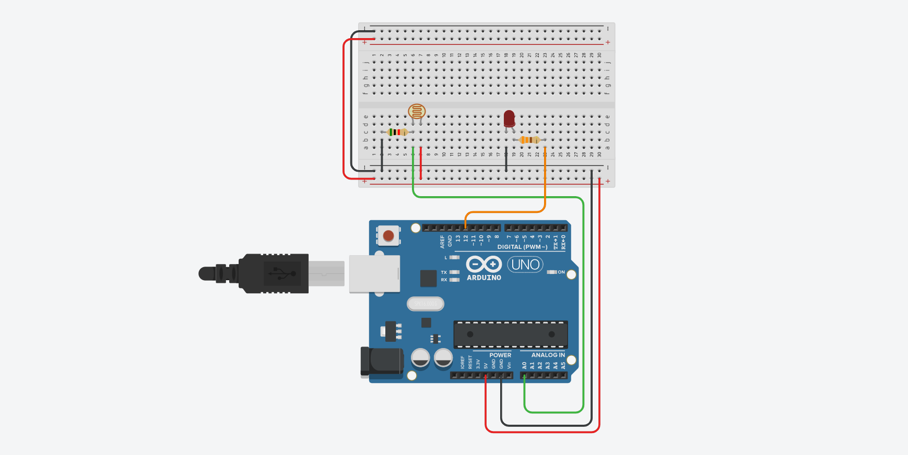

MULARONI MATTIA


PROGETTI ARDUINO
LED CHE SI ACCENDE AL BUIO
Funzionamento
Arduino riceve in input un segnale analogico dal fotoresistore (il quale può variare a seconda della resistenza immessa), ed a seconda di quanta luce entrerà in contatto col sensore, verrà acceso o spento il led, in questo caso verrà spento quando la luce scende sotto un certo valore.
Questo progetto è utile ad essere implementato in situazioni più grandi dove è necessario un risparmio di energia elettrica.
Lista componenti
| IMMAGINE | NOME PRODOTTO | QUANTITÀ | LINK |
|---|---|---|---|
 | ARDUINO UNO | 1 | AMAZON |
 | BREADBOARD | 1 | AMAZON |
 | FOTORESISTORE | 1 | AMAZON |
 | LED | 1 | AMAZON |
 | RESISTORI 330 OHM - 5K | 2 | AMAZON |
 | JUMPERS | 8 | AMAZON |
Funzionamento
1. Fotoresistore
Il fotoresistore è un componente il quale, a seconda di quanta luce entra, cambia la sua resistività, grazie a questa caratteristica è possibile leggere tramite arduino quanta luce è presente in un luogo.


Il fotoresistore viene letto da arduino mediante i suoi pin analogici (in questo caso verrà usato il pin A0), essi leggono valori da 0 a 1023, ma potrebbero essere più bassi nel caso si inserisca nel fotoresistore una resistenza più alta, in ogni caso questo non crea problemi, una accortezza invece, potrebbe essere quella di non usare resistenze troppo basse, in quanto il segnale potrebbe arrivare a fondoscala (1023) prima ancora che il fotoresitore arrivi a misurare la luminosità massima.
Prestare attenzione alla polarità della fotoresistenza, in quanto, se invertito il negativo col positivo, il segnale che arriva ad arduino potrebbe essere inverso.
2. Spiegazione codice e lettura valori
Per ottenere una lettura precisa è necessario eseguire il 'mapping', ovvero, tramite un codice di prova che stampa i valori del pin, misurare la luminosità nelle varie parti della giornata (alba mezzogiorno tramonto) in modo da capire le soglie impostare, oltre le quali fare spegnere e accendere i led.
Nel mio caso ho rilevato come valore soglia 800, ed ho programmato arduino in modo che quando il segnale oltrepassa la soglia impostata, accende il led, altrimenti lo spegne.
Un accorgimento utile (nel codice definitivo) potrebbe essere quello di impostare un delay abbastanza alto tra una lettura e l'altra, in modo da non fare spegnere ed accendere il led continuamente mentre il valore oscilla sopra e sotto la soglia.
Ecco il codice per la lettura del valore del fotoresistore.
Codice